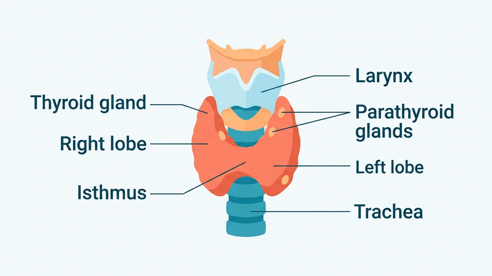
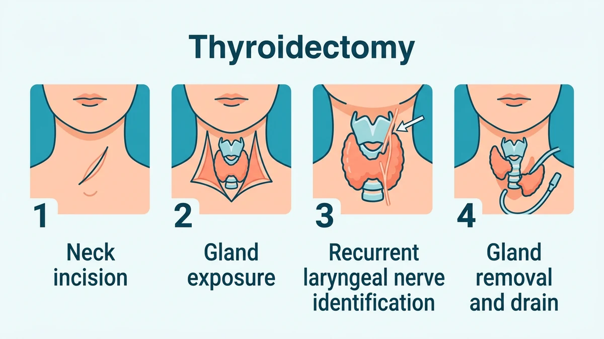

تیروئیدکتومی جراحی برداشتن بخشی از غدهٔ تیروئید یا تمام آن است؛ غدهای پروانهای شکل در جلوی گردن که هورمون تنظیمکنندهٔ سوختوساز بدن را میسازد. این عمل با بیهوشی عمومی و از یک برش افقی ظریف در پایین گردن انجام میشود و بسته به نوع بیماری، برداشتن یک لوب یا کل غده صورت میگیرد.
بسیاری از بیماران با شنیدن نام جراحی گردن نگران صدای خودشان میشوند یا میپرسند بدون تیروئید چطور زندگی کنند. در این راهنما مسیر کامل این جراحی را از کارکرد طبیعی غده تا مراحل اتاق عمل و عوارض احتمالی باز میکنیم. آمادگیهای پیش از عمل در مقالهٔ آمادگی قبل از جراحی تیروئید و مراقبتهای پس از ترخیص در مراقبتهای بعد از جراحی تیروئید توضیح داده شده است.
تیروئید از دو لوب راست و چپ تشکیل شده که با پل باریکی به نام ایسموس به هم وصلاند و دور نای را احاطه کردهاند. این غده هورمون تیروئید میسازد که دمای بدن، ضربان قلب و سرعت سوختوساز را تنظیم میکند. وقتی خود غده بیمار شود، برداشتن آن گاهی امنترین راه درمان است. جایگاه دقیق غده و ساختارهای مجاور در شکل زیر نشان داده شده است.

تصمیم به جراحی بر اساس سونوگرافی، نمونهبرداری از ندول و نظر مشترک متخصص غدد و جراح گرفته میشود. شایعترین نشانهها عبارتاند از:
انتخاب وسعت عمل به نوع و گسترهٔ بیماری بستگی دارد. جدول زیر تفاوت دو روش اصلی را نشان میدهد:
| روش | چه چیزی برداشته میشود | پیامد هورمونی |
|---|---|---|
| تیروئیدکتومی کامل | هر دو لوب و پل میانی غده | نیاز مادامالعمر به قرص جایگزین هورمون تیروئید |
| لوبکتومی (برداشتن نیمه) | فقط لوب بیمار همراه پل میانی | لوب سالم باقیمانده معمولاً هورمون کافی میسازد |
روال معمول عمل در چهار گام اصلی دنبال میشود:

این جراحی با بیهوشی عمومی انجام میشود، یعنی بیمار در تمام مدت خواب عمیق دارویی است و چیزی حس نمیکند. جزئیات این فرایند در مقالهٔ بیهوشی عمومی چگونه است شرح داده شده است. در بعضی مراکز برای پایش عصب تارهای صوتی حین عمل، ابزار پایش عصبی به کار میرود تا سالم ماندن صدا تأیید شود. عمل معمولاً چند ساعتی طول میکشد و بیمار پس از آن به اتاق ریکاوری منتقل میگردد.
تیروئیدکتومی در مراکز باتجربه سابقهٔ ایمنی بالایی دارد. عوارض عمومی مثل عفونت و خونریزی نادر است و عوارض اختصاصیتر شامل افت موقت کلسیم بهدلیل تحت تأثیر قرار گرفتن پاراتیروئید و گرفتگی گذرای صدا بهدلیل تحریک عصب حنجره میشود. برای مرور نشانههای هشدار مشترک همهٔ جراحیها، راهنمای علائم خطر بعد از عمل را ببینید.
⚠️ پس از ترخیص، در صورت تورم سریع جلوی گردن، تنگی نفس یا احساس فشار روی نای، خونریزی فعال محل برش، گرفتگی دائمی صدا، بیحسی و گزگز لب و انگشتان یا اسپاسم عضلانی فوراً به مرکز درمانی برگردید یا با ۱۱۵ اورژانس را خبر کنید.
تیروئیدکتومی جراحی برداشتن بخشی از غده تیروئید یا تمام آن است؛ غدهای پروانهای شکل در جلوی گردن که هورمون تنظیمکنندهٔ سوختوساز بدن میسازد. این عمل با بیهوشی عمومی و از یک برش افقی در پایین گردن انجام میشود و بسته به بیماری، برداشتن یک لوب یا کل غده انجام میگیرد.
شایعترین دلایل عبارتاند از سرطان یا بدخیمی مشکوک تیروئید، گواتر بزرگ که راه تنفس یا بلع را تنگ کرده، پرکاری تیروئید که با دارو کنترل نمیشود و ندولهای مشکوک یا عودکننده. تصمیم بر اساس سونوگرافی، نمونهبرداری و نظر متخصص غدد و جراح گرفته میشود.
در تیروئیدکتومی کامل هر دو لوب غده برداشته میشوند و بیمار تا پایان عمر قرص جایگزین هورمون تیروئید مصرف میکند؛ این روش برای سرطان و بیماری دوطرفه به کار میرود. در برداشتن نیمه فقط یک لوب خارج میشود و لوب سالم باقیمانده اغلب هورمون کافی میسازد، به همین دلیل بسیاری از بیماران به قرص دائمی نیاز پیدا نمیکنند.
چهار غدهٔ کوچک پاراتیروئید پشت تیروئید قرار دارند و کلسیم خون را تنظیم میکنند؛ آسیب به آنها باعث افت کلسیم و بیحسی انگشتان و لب میشود. عصب حنجره بازگشتی هم تارهای صوتی را حرکت میدهد و آسیبش گرفتگی صدا ایجاد میکند. جراح این ساختارها را در طول عمل با دقت شناسایی و حفظ میکند.
بدون تیروئید، هورمون تیروئید بهصورت قرص روزانه جایگزین میشود تا سوختوساز و انرژی بدن طبیعی بماند. با مصرف منظم و آزمایش دورهای، زندگی روزمره شامل کار، ورزش و بارداری کاملاً عادی ادامه پیدا میکند. تنظیم دقیق مقدار قرص بر اساس آزمایش خون توسط پزشک انجام میشود.
این جراحی سابقهٔ ایمنی بالایی دارد، اما مانند هر عمل دیگری عفونت، خونریزی و تورم محل برش ممکن است. عوارض اختصاصیتر شامل افت موقت کلسیم بهدلیل تحت تأثیر قرار گرفتن پاراتیروئید و گرفتگی گذرای صدا بهدلیل تحریک عصب حنجره است؛ آسیب دائمی در مراکز باتجربه نادر است.
دستور پزشک و پروتکل مرکز درمانی شما بر هر متن عمومی مقدم است.
این مقاله صرفاً جنبهی آموزش و اطلاعرسانی دارد و جایگزین تشخیص، مشاوره یا درمان پزشکی نیست.